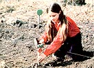
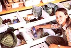

I've entered the county fair every year since I was ten years old. And I've been awarded the winner's right to go to the state contest each year, too . . . only at first I was too young to enter it! Finally, when I was 12, I won trips for both chicken and vegetable exhibits. I could only enter the statefair in one category, though, so I had to choose . . . and I decided to try my vegetables.
Mom paid a small fee to cover my food expenses, the Agriculture Extension Service mailed me a gate pass, and I was almost ready to go! However, since the state fair was a whole month after the county contest, some of my crops had stopped producing. Luckily, I'd helped Mom lots with her garden, so she let me harvest a few selections from the larger patch to go with my own pickings.
The Minnesota State Fair was so much fun that I just smile whenever I think of it. I'd never seen so many 4-Hers before. We all slept in two humongous rooms, one for boys and one for girls. When I first saw the rooms, all I could do was stare. Each one was bigger than my family's whole house (and then some) and was filled with triple bunk beds!
I soon became accustomed to the fair life of outdoor plays, animal showings, good food, fireworks, entertainment . . . and INDEPENDENCE. I loved having the responsibility of being on my own during my three-day stay. (Of course, there were rules there, like lights out at 10:00 p.m. and lights on at 5:30 a.m.) I volunteered to help out in the kitchen, so every morning I got dressed as quickly as I could and helped serve those masses of sleepy, hungry, hardworking youngsters.
Since vegetables are perishable, they were judged on the first day of the fair. After that competition, I had the rest of the time off and was free to roam. And even though I didn't win that contest, I sure found out one thing: The state fair is a great place to be!
|
 PHOTOS BY CYNTHIA B. DRISCOLL I'm always careful to plant more than enough of each vegetable I plan to exhibit. |
 My winning entry at our county fair included carefully selected and displayed beans, tomatoes, carrots, onions, and some heads of cabbage. |
|